Notenschlüssel
Notenschlüssel
In Guitar Pro wurden speziell für Saiteninstrumente gebräuchliche Spieleffekte als Effektsymbole hinzugefügt. Die meisten dieser Notenzusätze werden während der Wiedergabe der Partitur berücksichtigt.
Verschiedene Verzierungen oder Effekte kõnnen für einen ganzen Notenabschnitt den einzelnen Noten hinzugefügt werden, wie z.B.: Gehaltene Noten [let ring], Handballen gedämpfte Noten [PM]...
Diese Symbolen sind in Welt: Bearbeiten verfügbar.
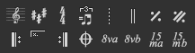
Notenschlüssel
Der Schlüssel zeigt auf dem Notensystem an, welcher Note die Linie, wo die Note sein wird, entspricht. Guitar Pro unterstützt 4 Arten von Schlüsseln (G, F, DO3 und C4) und 4 types von Ottavia (8va, 15va, 8vb, 15vb). Wenn Sie den Schlüssel ändern, ist es mõglich, die Note zu transponieren, um die selbe Notenhõhe zu behalten.
 Vorzeichen
Vorzeichen
Das Vorzeichen zeigt an, welche Noten standardmäßig verändert werden müssen. Es beeinflusst die Tonart des Stückes oder der Passage. Es bleibt für alle Spuren gleich, ausser für Transposition-Instrumenten, wenn das Stück eine Transposition-Tonart hat (z.B. Bb-Klarinette), was von Guitar Pro automatisch ausgeführt wird.
 Taktangabe
Taktangabe
Die Taktart gibt die Art und Länge der Anschlägen in den folgenden Takten an, die Zahl der Unterseite entspricht der Einheit der Zeit in Bruchteilen von ganzen Noten, und die Obere zeigt die Anzahl der Einheiten im Takt an. (siehe Voraussetzungen). Wenn der Takt vollständig ist, geht Guitar Pro direkt zum nächsten Takt. Die Takte, die nicht vollständig oderüberschritten sind, werden in Rot angezeigt, wenn die Option Auftakt aktiviert ist (Menüleiste > Auftak), sind der erste und letzte Takt nicht in rot angezeigt, auch wenn sie nicht vollständig sind.
 Rhythmische
Interpretation (Triplet Feel)
Rhythmische
Interpretation (Triplet Feel)Die rhythmische Interpretation ermõglicht unter anderem ternäre Takten, die in binärer Schreibweise geschrieben sind, zu spielen, um die Notation zu vereinfachen. Guitar Pro bietet verschiedene Motive für die rhythmische Interpretation, wobei das gängigstes das 8. Triple Feel ist, wo Sie zum Beispiel einen Blues in einem 4/4-Takt spielen kõnnen.
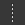
Free timeTakte in Free Time sind Takte, die frei im Rhythmus und Tempo gespielt werden, Taktstriche sind dann unterzeichnet und die Taktangabe in Klammern.
Der Doppelte Taktstrich zeigt einen Abschnitt- oder Vorzeichenwechsel oder eine andere wesentliche Änderung in der Partitur an. Guitar Pro fügt sie automatisch bei jedem Wechsel des Vorzeichens ein, Sie kõnnen jedoch weiterhin mehr hinzufügen durch diese Taste, wenn Sie denken, das ein wesentlicher Wechsel stattfindet.
Dieses Symbol zeigt an, dass man genau den vorherigen Takt wiederholt ; nützlich um Bearbeitung und Partitur zu erleichtern, inaktiv beim ersten Takt.
Dieses Symbol zeigt an, dass man genau die zwei vorherigen Takte wiederholt ; nützlich um Bearbeitung und Partitur zu erleichtern, inaktiv bei den zwei ersten Takten.
Dieses Symbol ersetzt den Taktstrich am Anfang des Takts. Es zeigt an, dass der oder die folgenden Takte ein paar Male gespielt sein werden und dies abhängig vom Wiederholungsendezeichen.
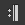
Wiederholung EndeDieses Symbol ersetzt den Taktstrich am Ende des Takts. Es zeigt an, dass man zum vorherigen Wiederholungsanfangzeichen zurück gehen muss. Ein Dialogfenster õffnet sich dann, um die Anzahl an Wiederholungen anzugeben.
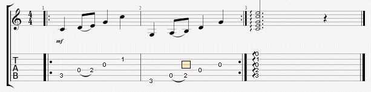
Die Abspielreihenfolge der Takte ist somit: 1 - 2 - 1 - 2 - 3.
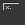
Alternative Endungen
Fügt ein Wiederholungszeichen am Anfang des aktiven Takts ein. Eine Wiederholung kann anzeigen, ob der Takt in Abhängigkeit von der Anzahl an Passagen auf diesen Takt gespielt werden muss. Dieses Symbol benutzt mann also gemeinsam mit den Wiederholungen. Zum Beispiel:
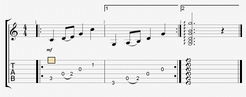
Fügt Symbole wie Coda, Double Coda, Segno, Segno Segno und Fine ein, als auch 11 verschiedene Sprüge ein.
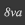
Ottavia
Dieses Symbol bedeutet, dass die Partitur eine Oktave hõher als das was geschrieben steht, gespielt werden muss. Wenn man auf diese Taste klickt, sind die Noten um eine Oktave tiefer auf dem Notensystem, und ein kleines Symbol "8va" wird angefügt, was darauf hinweist, dass man eine Oktave hõher spielen muss (die Taste 8vb bedeutet das Gegenteil, und die Tasten 15va und 15vb erweitern die Bedeutung auf zwei Oktaven).
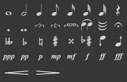
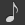
NotenwertDer Notenwert geht von der ganzen Note bis zu der Vierundsechzigstelnote, diese Dauer betrifft den Anschlag auf der die Note steht (um verschiedene lange Noten auf einen selben Anschlag hinzufügen, siehe Multi-Stimmen bearbeiten).
Es ist auch mõglich, punktierte Noten, doppelte punktierte Noten als auch einfache oder polyrhythmische n-Tolen zu bearbeiten.
Mit diesem Knopf kõnnen Sie die Note mit der vorherigen binden. Sie verlängert also die Dauer der vorherigen Note mit ihrer Dauer.
Mit diesem Knopf kõnnen Sie den gesamten Anschlag zu dem vorherigen fügen.
Mit dieser Taste kõnnen Sie eine Fermate (oder einen Haltepunkt) zu der aktuellen Note hinzufügen. Das bedeutet, dass man auf diesem Anschlag aufhõrt, nach dem Ermessen des Dirigenten, es ist also ein Multispur-Symbol. Ein Fenster õffnet sich, um das Symbol und die Dauer der Fermateüber das Tempo zu wählen.
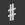
VersetzungszeichenDank dieser Knõpfe kann man der Note 5 Arten von Versetzungszeichen hinzufügen (vom doppeltem B oder Doppelkreuz bis zum Auflõsungszeichen).
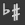
Versetzungszeichen ändernÄndert das Versetzungszeichen, wobei die Note die gleiche Hõhe behält.
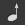
Um ein Halbtonschritt aufwärts/abwärtsMit diesem Knopf kõnnen Sie die Note oder die ganze Multiauswahl um einen Halbton erhõhen; der nächste Knopf erniedrigt um einen Halbton die Auswahl. Nützlich, um eine ganze Spur zu transponieren (Menu Bearbeiten > Alles auswählen).
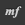
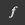
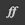
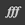
kõnnen Sie die Tondynamik der einzelnen Noten von sehr leise bis zu sehr laut festlegen. Um verschiedene Dynamikwerte auf den selben Anschlag zu erzeugen, müssen Sie verschiedene Stimmen benutzen.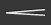
Crescendo/DecrescendoKann ein Crescendo/Decrescendo einem Anschlag oder einer Gruppe von Anschlägen durch Multiauswahl hinzufügen. Dies erhõht oder erniedrigt allmählich die Lautstärke.
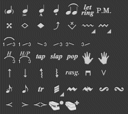
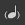
Unbetonte NoteEine unbetonte Note ist eine Note, die nur ganz schwach gespielt wird. Wenn eine Note unbetont ist, ist sein Dynamikwert automatisch reduziert. Die Note wird in Klammern auf der Tabulatur angezeigt.
Im Gegenteil zu der Vorschlagsnote wird eine betonte Note kräftig gespielt. Wenn eine Note betont ist, ist sein Dynamikwert automatisch erhõht.
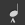
Stark betonte NoteDie stark betonte Note is die gleiche wie die betonte Note, aber markanter.
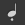
StaccatoStaccato steht für eine sehr kurze Note, unabhängig von der Dauer der Note auf der Partitur. Die Note wird durch einen Punkt angezeigt
Das Legato betrifft mehrere Noten. Legato heißt, dass man so viel Noten wie es geht zusammenbindet, um den Anschlag auf diesen Note zu erniedrigen. Dieses Effekt gibt es für die Gitarre nicht, weil man dann den Hammer on und den Pull of benutzt.
Beim Let Ring lässt man eine Note länger klingen, als ihre theoretische Dauer auf der Partitur. Man benutzt den Let Ring bei Arppegios z.B.
Im Menü Effekte > Gehaltene Note kõnnen Sie für jede Saite ein Let Ring hinzufügen auf sämtlichen Takten.
Eine abgedämpfte Note erklingt kurz und dumpf gegenüber einer normal gespielten Note und wird mit sehr stark gedämpften Saiten erzeugt. DieTonhõhe bleibt relativ unbestimmt. Man verwendet diese Spielweise um auf der Gitarre einen besonderen Rhythmuseffekt zu erreichen. Um eine abgedämpfte Note zu spielen, lassen Sie einen Finger der linken Hand (aus Sicht eines Rechtshänders)auf der Saite liegen, ohne ihn ganz auf den Bund zu drücken und schlagen mit der rechten Hand die Saite an.
Man kann einzelne Obertõne der Saite zum Klingen bringen, wenn man die Saitebeim Anschlag mit einem Finger der Greifhand, an bestimmten Stellen, nur kurzberührt. Man erzeugt ein Flageolett durch leichtes Aufsetzen eines Fingers derlinken Hand (aus Sicht eines Rechtshänders) auf den Teilungspunkten (1/2, 1/3, 1/4usw.) einer Saite, und indem man mit der anderen Hand die Saite anschlägt und gleichzeitig die Greifhand loslässt. Am 12'ten, 5'ten und 7'ten Bund sind diegebräuchlichsten und einfachsten Greifpositionen für Flageolett's. Aber auch auf anderen Bünden von Guitar Pro lassen sich Flageoletttõne erzeugen, was aber spieltechnisch recht schwierig werden kann.
Es gibt verschiedene Arten von Flageoletttõnen :
A.H.
- Künstliches Flageolett
Um ein künstliches Flageolett (engl. artificial harmonic) zu erzeugen,
drückt die linke Hand eine Saite bei einem Bund, als wie man eine normale
Note spielt. Mit dem Zeigefinger der rechten Hand wird dieselbe Saite
einige Bünde hõher leicht berührt, und ein anderer Finger der rechten
Hand spielt die Saite an. Das kann allerdings anfangs schwierig zu spielen
sein.
T.H. - Tapping
Flageolett
Das Tapped Flageolett ist eine Art
des künstlichen Flageoletts. Es wird erreicht, indem man auf der gleichen
Saite, aber einige Bünde hõher ein schnelles Tapping durchführt.
P.H. - Plektrum
Flageolett
Das Plektrum Flageolett (engl. pitch
harmonic) wird mit einem Plektrum erzeugt. Die Saite wird mit dem Plektrum
gespielt und der Daumen, der das Plektrum hält, berührt dabei leicht die
Saite, so dass ein Flageolett entsteht. Am besten eignet sich diese Spielweise
mit E-Gitarre und reichlicher Verzerrung, z. B. durch Benutzung eines
Distortion Effektgerätes oder durchübersteuerung der Verstärkerendstufe.
S.H.
- Halbes (Plek) Flageolett
Das Halbe (Plek.) Flageolett (engl. semi (pitch) harmonic) ist ähnlich
dem Plektrum Flageolett, mit Ausnahme, dass der volle Klang der Saite
zusätzlich zum Flageolett erhalten bleibt.
You can obtain those in Guitar Pro in two different ways (see Stylesheet).
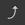
Bend (Saiten ziehen)Die Gitarrentechnik des Saitenziehens wird oft auch als "Bending" bezeichnet. Die Ziehrichtung der Finger kann auf- oder abwärts sein. Die Saite wird gezogen, indem man mit der Greifhand an einem Bund eine Saite drückt und anspielt und diese gleichzeitig dabei nach oben oder unten zieht, so dass sich die Tonhõhe der Note verändert. Das Fenster Bend kann die Art vom Bend konfigurieren in dem man die Punkte ändert. Für hochentwickelte Bends muss man Bindungen benutzen, damit die Partitur kohärent mit der Audiowiedergabe ist.
|
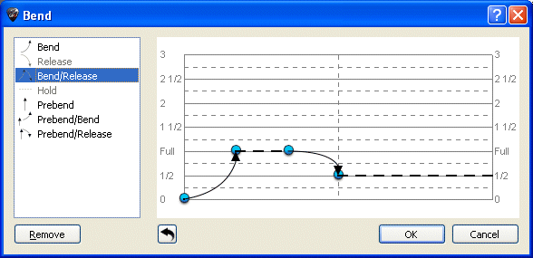 |
Die Knõpfe Bend, Bend/Release kõnnen die Basisform der Kurve bestimmen. Sie kõnnen gegenüber den gewõhnlichen oben genannten Einstellungen, eine andere Auslenkung der Tonhõhe wählen und zwar von einem ¼ Ton bis zu maximal 3 Tõnen. Die Bezeichnung "Full" steht für einen "ganzen Ton".
Ihre Auswahl wird in dem Tabulaturliniensystem durch unterschiedliche hinzugefügten Symbolen angezeigt und der Wert der Veränderung wird miteingetragen.
Die Kurve der Tonhõhenänderung kann geändert werden indem Sie die Punkte umsetzen. Wenn zwei Noten gebundet sind, wird das Bend standardmäßig der ganzen Dauer zugefügt. Das Stylesheet zeigt den Bend auf der Standard-Notation an. |
Hier ein Beispiel, was man so machen kann:
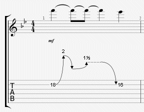
Der 'Fade In' Effekt, oder das Einblenden bezieht sich auf einen ganzen Anschlag, bzw. Akkord und ist dadurch gekennzeichnet, dass die Lautstärke von Null auf die eigentliche Hõhe anschwillt. Bei E-Gitarristen sehr beliebt , weil man den Anschlag nicht hõrt.
Das Fade-Out ermõglicht die Beendigung des Klangs durch den Lautstärkeregler der Gitarre.
Dies ist ein Fade-In verknüpft mit einem Fade-Out.
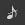
VorschlagsnoteDie Vorschlagsnote ist ein Effektzeichen. Sie wird durch eine sehr kurzen kleinen Note gekennzeichnet, die gleich nach einer anderen Note gespielt wird. Um eine Vorschlagsnote hinzufügen, muss man erst mal eine Noten hinzufügen, und sie dann in eine Vorschlagsnote verändern, was den Vorteil hat, dass es keine Begrenzung der Anzahl an Vorschlagsnoten gibt, und man ihr daher alle Effekte hinzufügen kann. Die Vorschlagsnote wird bei der Berücksichtigung des Zeitwertes des gesamten Taktes nicht mitgezählt, verlängert also die Taktzeit nicht.
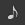
AnschlagsnoteGleich wie bei der Vorschlagsnote, ausser dass hier der Vorschlag vor dem Takt beginnt, was den Folgenden Takt verschiebt (dieser beginnt also ein kleines Bißchen nach dem Moment, wo er geschrieben wurde).
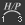
Hammer-On/Pull-OffHammer-On/ (HO) Pull-off / (PO) sindübergänge zwischen zwei Noten, die auf derselben Saite gespielt werden. Der erste Ton wird normal angespielt, während der zweite Ton durch eine Technik der linken Hand (aus Sicht eines Rechtshänders) erzeugt wird.
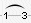
Hammer-On bedeutet, mit einem weiteren Finger, auf der gleichen Saite, durch einen harten Aufschlag, eine hõhere Note zum Erklingen zu bringen, während der Finger, der die erste Note gespielt hat so bleibt.
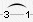
Guitar Pro bestimmt automatisch, ob es sich bei dem jeweiligen Verzierungseffekt, um ein Hammer-On, oder ein Pull-Off, handelt. Das Stylesheet kann die Anzeige der H und Püber die Haltebõgen konfigurieren oder nicht.
Oft sind Hammer on / Pull Of zusammen auf zwei gleiche Noten verknüpft, um eine Phrasierung zu spielen:
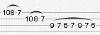
Ein Aufwärts-Mordent ist eine melodische Verzierung in Form eines schnellen Schlags zwischen Hauptnote (geschriebene Note) und hõchste Note (die abhängig vom Vorzeichen ist).
Ein Abwärts-Mordent ist eine melodische Verzierung in Form eines schnellen Schlags zwischen Hauptnote (geschriebene Note) und tiefste Note (die abhängig vom Vorzeichen ist).
Ein Gruppetto (auf Italienisch, "kleine Gruppe") ist eine melodische Verzierung in Form einer melodischen Zeichnung aus vier Klängen, die sich um die Hauptnote drehen und die zwei benachbarten Noten - obere und untere, erscheinen lässt. Ein Gruppetto beginnt mit der nächst niedrigeren Note, und dann mit der Hauptnote, mit der obersten Note und schließlich endet es mit der Hauptnote. Wie der Mordent, hängt ein Gruppetto mit der Harmonie des Stückes zusammen, also mit dem Vorzeichen.
Ein umgekehrtes Gruppetto ist eine melodische Verzierung in Form einer melodischen Zeichnung aus vier Klängen, die sich um die Hauptnote drehen und die zwei benachbarten Noten - obere und untere, erscheinen lässt. Ein Gruppetto beginnt mit der nächst oberen Note, und dann mit der Hauptnote, dann mit der untersten Note und schließlich endet es mit der Hauptnote.
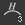
Tapping linke HandMit einem oder mehreren Fingern der Spielhand greift man gezielt einen oder mehrere Tõne auf dem Griffbrett ab und lässt die Saite gleich wieder los, durch festes Aufdrücken eines oder mehreren Fingern.
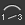
SlidesDer Ausgangston wird angeschlagen und der Zielton mit der linken Hand (aus Sicht eines Rechtshänders) durch das Gleiten auf dem Griffbrett zum Klingen gebracht. Guitar Pro unterstüzt verschiedene Arten von Slides:
Die Note wird gespielt und der Finger gleitet zu einer zweiten Note, welche durch das Gleiten erklingt.
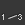
Die Note wird gespielt und der Finger gleitet zu einer zweiten Note, auf einem anderen Bund, welche aber getrennt angespielt wird.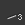
Der Ausgangston kommt von unten. (Ausgangsbund ist unbestimmt)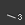
Der Ausgangston kommt von oben. (Ausgangsbund ist unbestimmt)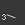
Die Note wird angespielt und der Finger gleitet in Stegrichtung zu einem tiefergelegenen, unbestimmten Bund.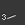
Die Note wird angespielt und der Finger gleitet in Sattelrichtung zu einem hõhergelegenen, unbestimmten Bund.
Zur Erzeugung einer Handballen gedämpften Note (engl. Palm Mute), dämpft man die Saiten mit der Schlaghand und schlägt gleichzeitig die gewünschte Saite. Achten Sie auf diesen Effekt, wenn Sie eine Gitarre mit einem Vibratoarm haben.
In der Partitur wird das Palm Mute mit dem Symbol „P.M“über der Tabulatur gekennzeichnet.
Mit dem Vibratoarm (Tremolo Bar) kann das Gleichgewicht zwischen den Saiten und entgegen gerichteter Federspannung des Vibrato-Systems kurzzeitig oder für längere Zeit geändert werden. Der Vibratoarm wird mit der rechten Hand (für ein Rechtshänder) bedient.
Die Bedienung des Tremolo Bar Fenster ist fast identisch mit dem des Fenster des Bends.
Der Triller beginnt mit der oberen, dissonanten Nebennote, aber kann auch von unten beginnen. Tempo und Länge des Trillers richten sich nach der Länge der Noteüber der das Zeichen steht und nach dem Charakter des Stückes. Aus moderner Sicht kõnnte man sagen: einfach eine sehr schnelle Abfolge von Hammer-On's mit Pull Off's. Im Triller-Fenster kann man den Bund der zweiten Note aussuchen (die erste Note ist auf der Partitur angezeigt), sowie das Tempo des Trillers.
Der Vorteil dieser Notation ist, dass sie die Partitur erleichtert, denn die abwechselnden Noten werden nicht angezeigt.
Beim Tremolo Picking spielt man ganz schnell die selbe Note.
Wie beim Triller ist der Vorteil dieser Notation , dass sie die Partitur erleichtert, denn die abwechselnden Noten werden nicht angezeigt.
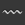
Vibrato linke HandBeim linke Hand Vibrato bewegt man schnell die Finger der linken Hand (für Rechtshänder). Die Bewegung erzeugt so eine Hõhenvariation. Das Vibrato wird mit einer kleinen Welleüber der Tabulatur symbolisiert und dauert so lange wie der Ton klingt.
Guitar Pro bietet zwei Reihen von Vibrato an (leicht und wide).
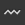
Steg Vibrato (Vibratoarm)Der Vibrato-Steg ist stärker als der linke Hand Vibrato und wird mit dem Vibratoarm erzeugt. Dieser Effekt wird auf alle Noten des Akkords angewendet.
Der Vibrato-Anschlag wird durch Sägezähneüber der Tabulatur symbolisiert und endet, wenn eine neue Note kommt. Guitar Pro bietet zwei Reihen von Vibrato an (leicht und wide).
 Wha-Wha
Wha-Wha
Das Wah-Wah ist ein Pedal-Effektgerät. Die mõglichen Einstellungen sind An/Aus und Auf/Zu. Der
Wah-Wah-Effekt wird nur beim Abspielen wiedergegeben, wenn der RSE benutzt wird und wenn ein Wha-Wha-Pedal in der Effektkette eingebaut ist. (siehe Ton Konfigurieren).
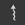
ArpeggioDas Arpeggio (Arpeggio) ist das nacheinander Spielen der Noten eines Akkords. Das Arpeggio-Fenster kann Geschwindigkeit und Verschiebung einstellen. Das Down-Arpeggio geht von der tiefen bis zu der hohen Saite, und das Up-Arpeggio von der hohen bis zu der tiefen Saite.
Brush heißt die Saiten eines Akkords rhythmisch bürsten. Es wird für Begleitungen an der Rhythmus-Gitarre sehr gebraucht.
Das Fenster kann Geschwindigkeit und Verschiebung einstellen. Diese Dauer muss kürzer als die Dauer des Taktes selbst sein, damit alle Noten schwingen bevor andere gespielt werden.
Der Rasgueado ist eine Technik der rechten Hand und wird sehr häufig bei der Flamenca Gitarre verwendet. Guitar Pro schlägt 18 Rasgueado Motive vor, die vom Audio-Engine interpretiert werden.
Dieser Fingersatz beschreibt (aus Sicht eines Rechtshänders), welcher Finger der linken Hand, welche Saite auf dem Griffbrett spielt. "D" steht für den Daumen, "0" für den Zeigefinger, "1" für den Mittelfinger, usw.. (die Notenschrift kõnnen sie im Stylesheet ändern).
Das Fingersymbol wird unterhalb auf das Notensystem vor der Note angezeit oder, wenn es kein Notensystem gibt, unter der Tabulatur einfach dargestellt.
Dieser Fingersatz beschreibt (aus Sicht eines Linkshänders).welcher Finger, welche Saite auf dem Griffbrett spielt. "D" steht für den Daumen, "Z" für den Zeigefinger, "M" für den Mittelfinger, usw.. (die Notenschrift kõnnen sie im Stylesheet ändern).
Das Fingersymbol wird unterhalb auf das Notensystem
vor der Note angezeit oder, wenn es kein Notensystem gibt,über der Tabulatur
einfach dargestellt.
Der Plektronschlag zeigt die Richtung des Schlags des Plektrons an. „v“ zeigt an, dass der Schlag von unten nach oben geht (von der hohen Saite bis zur tiefen Saite), dies ist der Aufschlag.
Mit einem oder mehreren Fingern der Spielhand greift man gezielt einen oder mehrere Tõne auf dem Griffbrett ab und lässt die Saite gleich wieder los, durch festes Aufdrücken eines oder mehrer Finger, während die Greifhand dieselbe Saite an einem anderen Bund herunterdrückt. Es erklingt also der an dem einen Bund, auf der entsprechenden Saite, gegriffene Ton und der mit den Fingern der Spielhand, getappte.
In Guitar Pro wird oberhalb der Tabulatur ein "T" Symbol gesetzt, um ein Tapping anzuzeigen. Bei Guitar Pro betrifft das Tapping immer alle Noten des Akkords. Dieser Effekt wird vom Audio-Engine von Guitar Pro erzeugt.
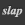
Slap (Bassgitarre)Der Slapping-Effekt wird erzeugt, indem man während man das Handgelenk dreht, mit dem Knõchel des Daumens der Spielhand die Basssaite auf einen der letzten Bünde, oder kurz hinter dem Hals anschlägt, anstatt die Saite zu zupfen. Der Daumen liegt parallel, er darf auch etwasüberstreckt sein. Dem Slapping folgt oft der Pop-Effekt (siehe unten).
Den Popping-Effekt erreicht man, indem man mit dem Zeigefinger eine der zwei hõheren Saiten hochzieht und dann grob auf das Griffbrett zurückfallen lässt. Der Popping-Effekt wird oft durch einen Slap vorbereitet (siehe oben).
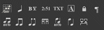
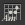
Akkorde [A]Ausführliche Informationen zu Akkorden erhalten Sie in: Akkord Diagramme.
Dieser Knopf fügt die Slah-Notation in die Tabulatur ein, konvertiert die ausgewählten Noten in Slash, indem er die Information der eingegebenen Noten behält. Sehr nützlich, um Rhythmik mitübergangsnoten einzugeben.
Man kann auch eine Spur nur in Slash-Notation haben (siehe Spureingeschaften).
Ein Hinweisüber das Notensystem, was anzeigt, ob es sich um ein Barré oder semi-Barré auf einen speziellen Bund, während eines Abschnittes der Partitur handelt. Sehr oft bei der klassischen Gitarre benutzt, wenn es keine Tabulatur gibt.
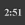
TimerKann an einem bestimmten Standort die Anzahl der Minuten und Sekunden, die seit Beginn der Partitur vergangen sind, anzeigen. Guitar Proübernimmt automatisch die Berechnung und zeigt sie in der Form min: sec auf der Partitur an.
Kann ein Abschnitt hinzufügen, siehe Abschnitte Hinzufügen.
Kann vermeiden (erzwingen), dass der nächste Takt auf die nächste Zeile kommt.
Diese 7 letzten Knõpfe
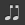
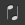
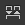
kõnnen die Richtung des Notenhals und die Balken individuell gestalten.